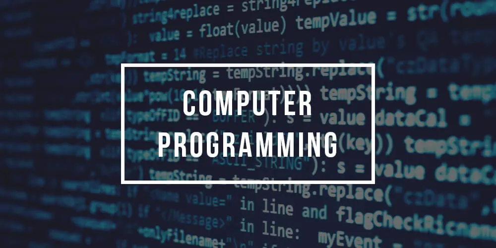
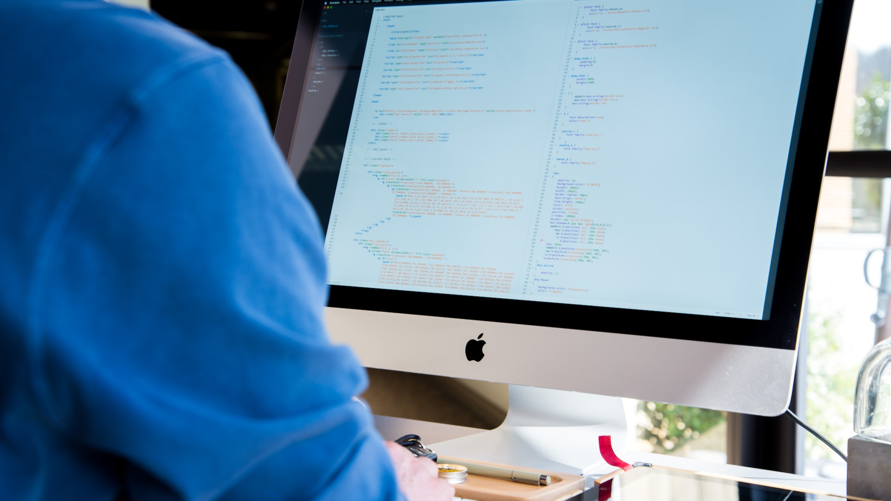

Bilgisayar Programcılığı Nedir?, Ne İş Yapar?, Ne Kadar Maaş Alırlar?
Bilgisayar Programcısı Nedir?
Bilgisayar programcısı, yazılım, bilgisayar uygulamaları ve programları için kod oluşturarak ekonomik sektörlerde değerli hizmetler sağlamaktadır. Bilgisayar programlama pozisyonları için gereksinimler değişebilmektedir ancak ileri eğitim ve kimlik bilgileriyle, bilgisayar programlama uzmanları kazanç potansiyellerini ve kariyer seçeneklerini artırmaktadır. Bilgisayar programcıları, beklentilerini genişletmek için profesyonel kaynaklar ve kariyer kaynakları aracılığıyla ağ oluşturabilmektedirler. Bilgisayar programcısı, verimli, etkili yazılım ve işletim sistemi işlevini sağlamaktadır.
Bilgisayar programcıları günlük olarak çeşitli görevleri yerine getirmektedir. Birçoğu programlama dilleriyle çalışıp, kod yazıp düzenlemektedir. Bilgisayar Programcıları ayrıca sistem, yazılım ve yapı testleri yapmakta, hataları düzeltmekte ve sorunları ortaya çıktıkça o problemleri gidermektedir. Ek bilgisayar programlama sorumlulukları arasında sistemlerin yükseltilmesi, teknik personelin denetlenmesi, yöneticilere ve amirlere raporların hazırlanması yer almaktadır. Bir bilgisayar programcısı olmanın yolu tipik olarak teknolojiye büyük bir ilgi ve bilgisayarların dili hakkında neredeyse doyumsuz bir merakla başlamaktadır.
Bu mesleği yapan kişiler programcılığın herhangi bir alanında uzman ve pek çok yazılım türü için kodlama yazan programcılar olarak adlandırılmaktadır. 'Programcı' terimi, bir yazılım geliştiricisine, yazılım mühendisine, bilgisayar bilimcisine veya yazılım analistine atıfta bulunmak için kullanılabilmektedir. Bununla beraber bu mesleği yapan kişiler karakteristik olarak programlamanın ötesinde farklı yazılım mühendisliği becerilerine sahip olmaktadırlar.
Bilgisayar Programcısı Ne İş Yapar?
Bilgisayar programcısı, çalıştığı pozisyonlarda başarılı olmak için zor beceriler geliştirmektedir. Programlama dilleri, bilgisayar programcıları için oldukça önemli olan gerekli becerilerdir ve birden çok dili bilmekten yararlanmaktadırlar. Diller kullanım ve uygulanabilirlik açısından farklılık gösterir ve artan yeterlilikle programcılar kariyer fırsatlarını genişletir. Bilgisayar programlama becerilerini genişleten ek diller arasında Swift, Rust ve Ruby gibi dillerde bulunmaktadır. MacOS, iOS, watchOS ve ilgili hizmetler için programlama dili olan Swift , programcıların güvenli, güçlü kod tasarlarken ikili çerçeveler oluşturmasına ve paylaşmasına olanak tanımaktadır.
Linux, ücretsiz, açık kaynaklı bir yazılım işletim sistemidir. Başlangıçta kişisel bilgisayarlar için geliştirilen Linux, artık diğer tüm sistemlerden daha fazla platformda çalışmaktadır. Linux konusunda uzman olan bilgisayar programcıları, diğer adaylara göre rekabet üstünlüğü kazanmaktadır. Java, "bir kez yaz, her yerde çalıştır" işlevine sahip, çok amaçlı bir bilgisayar programlama dilidir. Bu, Java'da yazılan kodun Java sanal makinesi ile donatılmış herhangi bir cihazda çalışabileceği anlamına gelmektedir. Java dilinin yaygın kullanımı, onu Bilgisayar Programcısı için kritik bir yetkinlik haline getirmektedir. HTML ve CSS ile birlikte JavaScript, internetin üç temel teknolojisinden biridir. Neredeyse tüm web siteleri etkileşimi etkinleştirmek için JavaScript kullanır ve tüm büyük web tarayıcıları bir JavaScript motoru içerir. Web uygulamaları üzerinde çalışan Bilgisayar Programcıları, samimi bir JavaScript bilgisine sahip olmalıdırlar. İlk olarak 1985'te ortaya çıkan C ++; C #, D ve Java gibi sonraki dillerin temelini atmaya yardımcı olmuştur. Birçok programcı, yazılım altyapısı ve masaüstü uygulamaları ya da E-ticaret sunucuları gibi kaynak kısıtlı uygulamaları tasarlarken C ++ kullanmaktadır. Uzmanlar, bilgisayar programlama öğrencilerinin ilk dillerinden biri olarak C ++ 'yı öğrenmelerini tavsiye etmektedir.
Linux, ücretsiz, açık kaynaklı bir yazılım işletim sistemidir. Başlangıçta kişisel bilgisayarlar için geliştirilen Linux, artık diğer tüm sistemlerden daha fazla platformda çalışmaktadır. Linux konusunda uzman olan bilgisayar programcıları, diğer adaylara göre rekabet üstünlüğü kazanmaktadır. Java, "bir kez yaz, her yerde çalıştır" işlevine sahip, çok amaçlı bir bilgisayar programlama dilidir. Bu, Java'da yazılan kodun Java sanal makinesi ile donatılmış herhangi bir cihazda çalışabileceği anlamına gelmektedir. Java dilinin yaygın kullanımı, onu Bilgisayar Programcısı için kritik bir yetkinlik haline getirmektedir. HTML ve CSS ile birlikte JavaScript, internetin üç temel teknolojisinden biridir. Neredeyse tüm web siteleri etkileşimi etkinleştirmek için JavaScript kullanır ve tüm büyük web tarayıcıları bir JavaScript motoru içerir. Web uygulamaları üzerinde çalışan Bilgisayar Programcıları, samimi bir JavaScript bilgisine sahip olmalıdırlar. İlk olarak 1985'te ortaya çıkan C ++; C #, D ve Java gibi sonraki dillerin temelini atmaya yardımcı olmuştur. Birçok programcı, yazılım altyapısı ve masaüstü uygulamaları ya da E-ticaret sunucuları gibi kaynak kısıtlı uygulamaları tasarlarken C ++ kullanmaktadır. Uzmanlar, bilgisayar programlama öğrencilerinin ilk dillerinden biri olarak C ++ 'yı öğrenmelerini tavsiye etmektedir.
Microsoft tarafından oluşturulan ASP.NET, dinamik web sayfalarının veya bir kullanıcı her görüntülediğinde farklı içerik görüntüleyen sayfaların geliştirilmesini desteklemektedir. ASP.NET, programcıların başka dinamik web uygulamaları ve web hizmetleri oluşturmalarına da olanak tanımaktadır. Çoğu modern Bilgisayar Programcısı, ASP.NET Core olarak bilinen daha yeni bir ASP.NET varyasyonunu öğrenmektedir. C #, C-sharp olarak telaffuz edilmekte genel amaçlı çok paradigmalı bir programlama dili olarak kullanılmaktadır. 2000 yılında piyasaya sürülen C #, programcıların dinamik web sayfaları, uygulamalar, geliştirme araçları ve derleyiciler oluşturmasına olanak tanıyan olağanüstü esneklik sunmaktadır. Modern, basit ve güçlü olarak tanımlanan C #, bilgisayar programcılarının kendi alanlarındaki çoğu işe hak kazanmak için bilmesi gereken temel dillerden birini temsil etmektedir. SQL veya Yapılandırılmış Sorgu Dili, bir ilişkisel veritabanı yönetim sistemi içindeki verileri yönetir. İlk 1974 yılında geliştirilen SQL, bgünümüzde Microsoft Access gibi uygulamalarda kullanılmaya devam etmektedir. Bilgisayar programcıları SQL'i anlamaktan ve kullanmaktan fayda sağlayabilirken, dil çoğunlukla veritabanı tasarımı ve yönetimi konusunda uzmanlaşmış programcılara hizmet etmektedir.
HTML veya Hypertext Markup Language, web tasarımında en yaygın kullanılan dillerden biridir. İnternet tarayıcıları bulunduğu bir sunucu içerisinden HTML belgelerini almakta ve bunları multimedya web sayfalarına dönüştürmektedir. HTML'nin evrenselliği göz önüne alındığında, Bilgisayar Programcıları bilgisayar bilimlerinde bir lisans programına başlamadan önce dili öğrenmeye çalışmaktadırlar. Sunucu tarafı kodlama dili olan PHP, web sitelerinin, intranetlerin, internet uygulamalarının ve sosyal ağların oluşturulmasını sağlamaktadır. Genellikle HTML koduna gömülüdür ve C programlama dili kullanılarak gerçekleştirilir, çok az Bilgisayar Programcısı yalnızca PHP ile çalışmaktadır. Yine de her yerde bulunması onu programlama uzmanları için paha biçilmez bir ikincil dil yapmaktadır. Visual Basic gibi olay odaklı programlama dilleri, programların kullanıcı eylemlerine, sensör çıkışlarına veya harici mesajlara yanıt vermesine izin vermektedir. 2008'de Microsoft, bazı yazılım geliştiricileri hala kullansa da VB'yi desteklemeyi bırakmıştır. Rust , C ++ 'ya alternatif olarak hızlı, bellek açısından verimli bir dil sunar. Ruby güvenli, basit, açık kaynaklı bir programlama dili olarak tanımlanmaktadır.

Bilgisayar Programcısı Maaşları
Bilgisayar Programcısı, bilgisayar programlarının kaynak kodunu tasarlama, yazma, test etme, hata ayıklama, sorun giderme ve bakım sürecini çözmektedir. Bu programlama için yazılan kaynak kodu, bilgisayarın onu anlayabilmesi için bir programlama dilinde yazılmaktadır. Kod, mevcut bir kaynağın bir değişikliği veya tamamen yeni bir şey olabilmektedir. Bu bilgisayar programlamasının amacı, istenen belirli bir davranışı, özelleştiren ve üreten bir program oluşturmaktır. Kaynak programlama kodu yazma süresi çoğunlukla uygulama alanı bilgisi, özel algoritmalar ve biçimsel mantık kapsamında olmak üzere pek çok değişik konularda uzmanlık gerektirir.
Bilgisayar Programcıları hem özel hem de devlet sektöründe rahatlıkla iş bulabilmektedirler. Ayrıca freelance olarak çalışmak isteye programcılar da firma ve şirketlerden ya da dışarıdan kişisel olarak iş alarak mesleklerini yürütebilmektedirler. 2021 verilerine göre bir Bilgisayar Programcısının aldığı en yüksek maaş miktarı 8.410 TL, en düşük ise 2.900 TL olarak belirlenmiştir. Ortalama olarak maaş miktarı 4300 TL'dir. Bu maaş miktarları kişilerin çalıştığı firmaya ve sektöre göre değişkenlikler göstermektedir.
Bilgisayar Programcısı Nasıl Olunur?
Bilgisayar Programcıları, yazılı, sözlü iletişim becerilerinden, yaratıcılıktan, meraktan ve bağımsız ekip halinde çalışma becerisinden yararlanmaktadır. Bilgisayar Programcısı olamak isteyen bir kişi ÖSYM'nin TYT ve AYT sınavlarına girmek zorundadır. Bu sınavlardan yeterli puanı aldığı takdirde istediği bölüme kaydına yaptırabilmektedir. Üniversitelerde 2 yıllık ön lisans bilgisayar programcılığı bölümü bulunmaktadır. Öğrenciler öğrenim hayatları boyunca bu bölümden birden fazla pek çok programlama dilini öğrenebilmektedir.
Bilgisayar programcılığı bölümünün 4 yıllık lisans eğitimi bulunmamaktadır. Öğrenciler bilgisayar mühendisliği bölümü ile dilerlerse mezun olduktan sonra bu mesleği yapabilmektedirler. Staj programını tamamlayan her öğrenci derslerinde de aynı başarıyı gösterebilirse mezun olup Bilgisayar Programcısı olabilmektedir.
Bilgisayar Programcısının Özellikleri Nelerdir?
Bilgisayar Programcıları, meslektaşlarına ve alandaki daha az bilgili kişilere karmaşık teknik kavramları açıklayabilmelidir. Detaylara gösterilen özen, verimliliği, kaliteyi ve yeterliliği kolaylaştırdığından bu programcılar kod, programlama dilleri ve yazılım işlemleriyle çalışmaktadır. Örgütsel beceriler odaklanma ve çoklu görev çalışmalarında başarı olmaktadırlar.

Bilgisayar Programcısı Neler Yapar?
Bilgisayar Programcısı programlama kodu yazmak dışında, yazılım performanslarını test etmekte ve bilgisayar yazılım sorunlarını da çözmektedir. Performansı artırmak için yazılım programlarını değiştirebilmektedir. Ayrıca bilgi teknolojisi sorunlarını çözmek için başkalarıyla iş birliği yapmaktadır.
Bilgisayar Programcısı ile Yazılım Mühendisi Arasındaki Fark Nedir?
Bir Bilgisayar Programcısı bütün bir programın kodunu yazar, Yazılım Mühendisi ise bir sistem oluşturmak için farklı yazılım sistemi mühendisleri tarafından yazılan parçalarla birleştirilecek bir yazılım sistemi parçası geliştirir. Programlama öncelikle tek kişilik bir faaliyettir, Yazılım Mühendisliği temelde bir ekip faaliyetidir. Programcı, kodlamanın yolunun farkındadır ve önemli işler yaratmak için gereken teknik becerilere sahiptir, Yazılım Mühendisi, ihtiyaçları anlamak, paydaşlarla birlikte çalışmak ve onların ihtiyaçlarını karşılayan bir cevap geliştirmek için bilimsel bir yöntem izlemektedir.
- YouTube videosu için IIENSTITU kanalına teşekkür ederiz.
Yorumlar